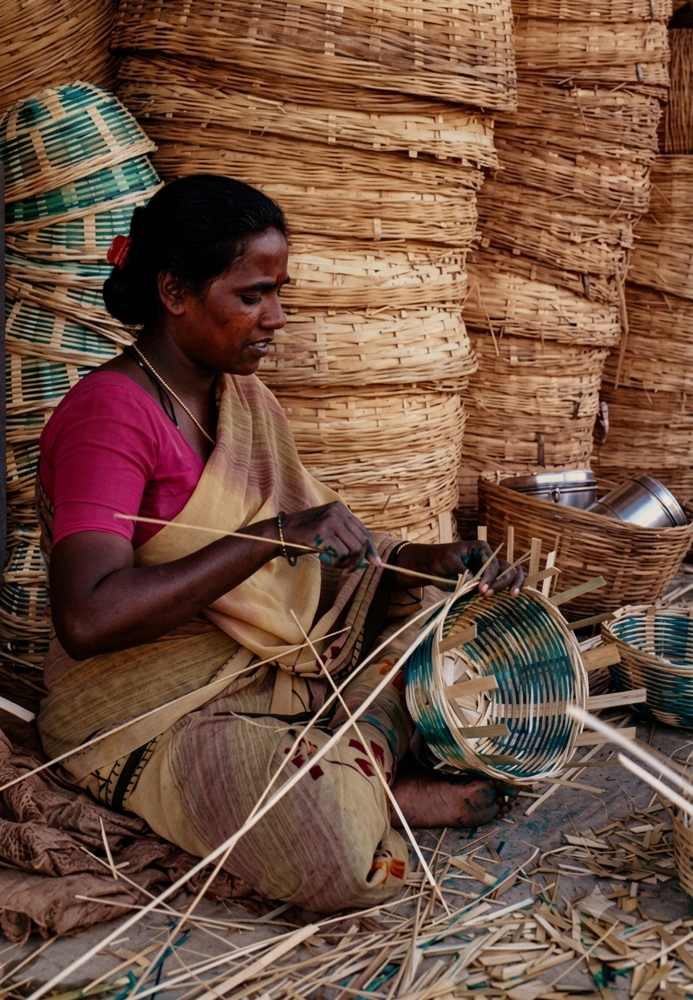
01 / CRAFT
Bamboo Craft
Handwoven bamboo craft created using traditional techniques passed through generations.
View Details →ROOTS / THE ARCHIVE
Explore the crafts, voices and communities that keep India's cultural heritage alive.

Handwoven bamboo craft created using traditional techniques passed through generations.
View Details →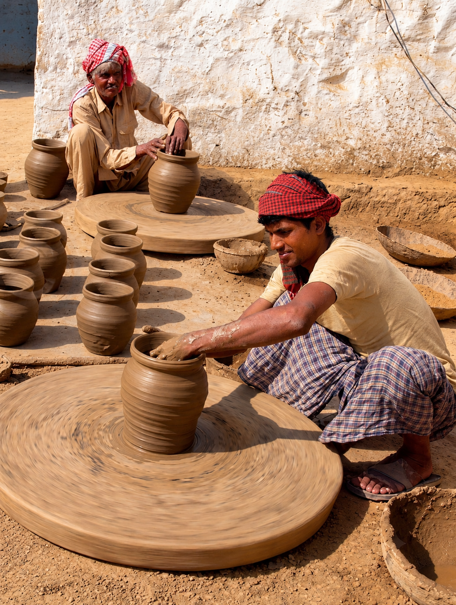
Traditional pottery shaped by hand, reflecting everyday life and artistic knowledge.
View Details →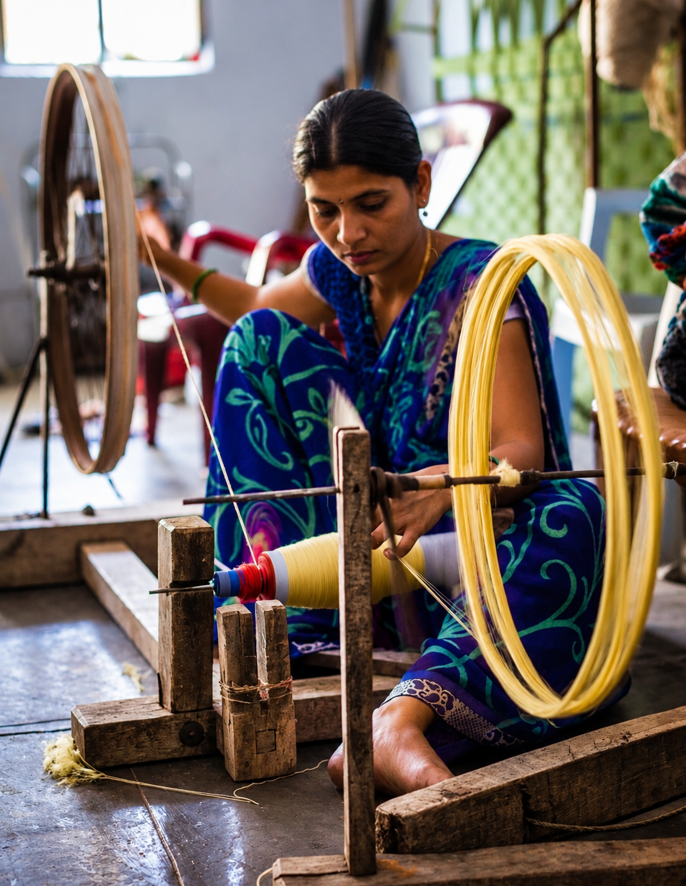
Woven textiles carrying patterns, colours and techniques preserved by generations of artisans.
View Details →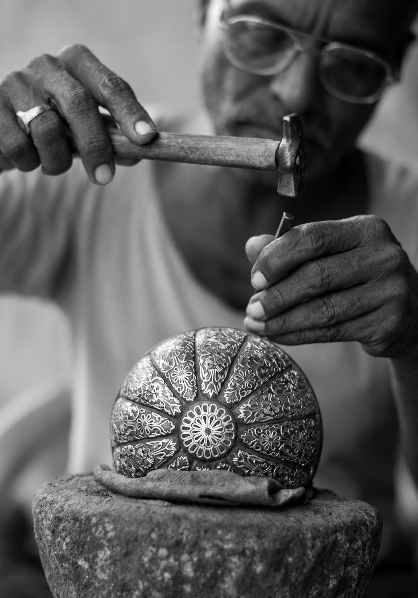
Skilled metalwork shaped through traditional techniques and artisan knowledge.
View Details →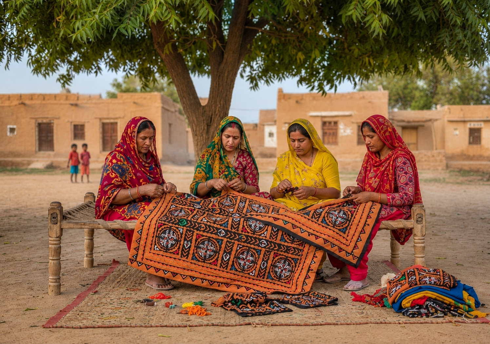
Distinctive textiles carrying patterns, colours and traditional craft knowledge.
View Details →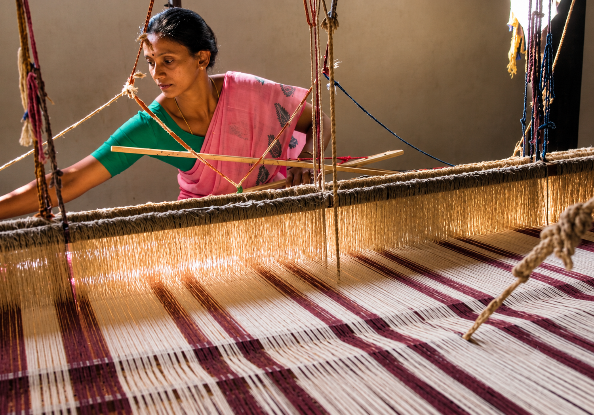
A closer look at the people, patience and skill behind traditional craftsmanship.
View Details →
A story about memory, traditional knowledge and the relationship between people and nature.
View Details →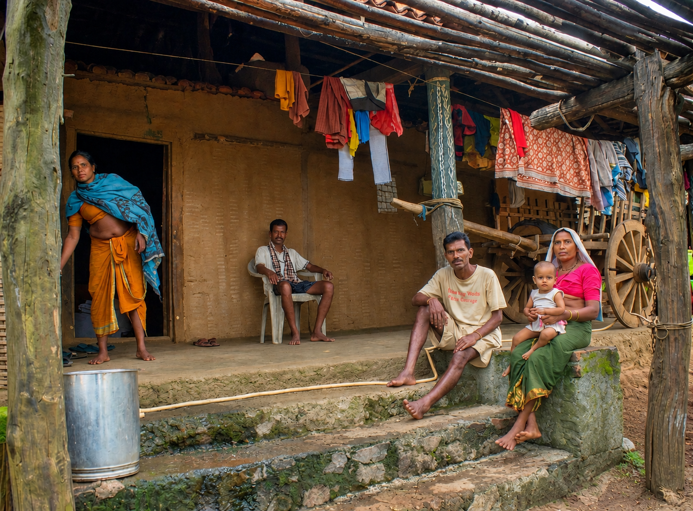
Memories and everyday stories that connect younger generations with their cultural roots.
View Details →
Everyday objects carrying memories, identity and traditions across generations.
View Details →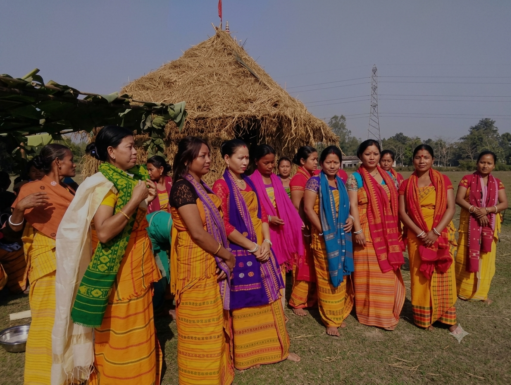
Discover the traditions, landscape, crafts and cultural practices of the Bodo community.
View Details →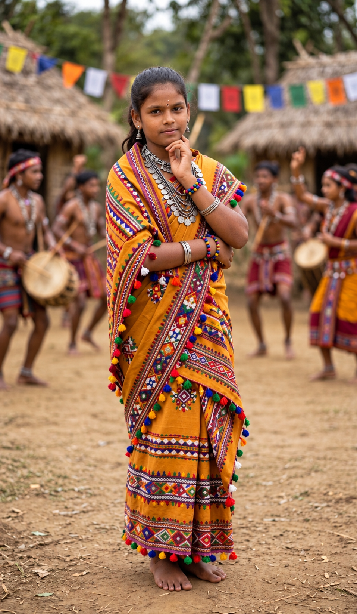
A cultural heritage shaped by stories, art and community knowledge.
View Details →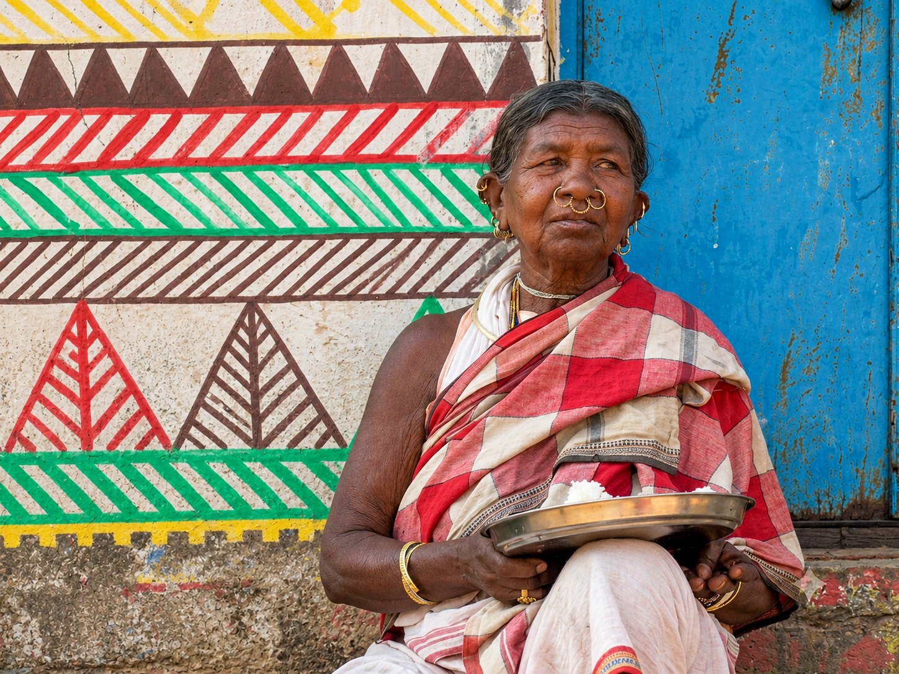
Traditions shaped by community, landscape and generations of knowledge.
View Details →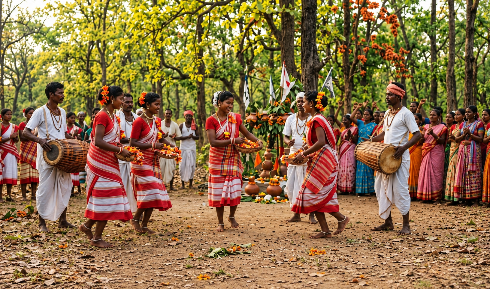
Stories, traditions and cultural practices carried across generations.
View Details →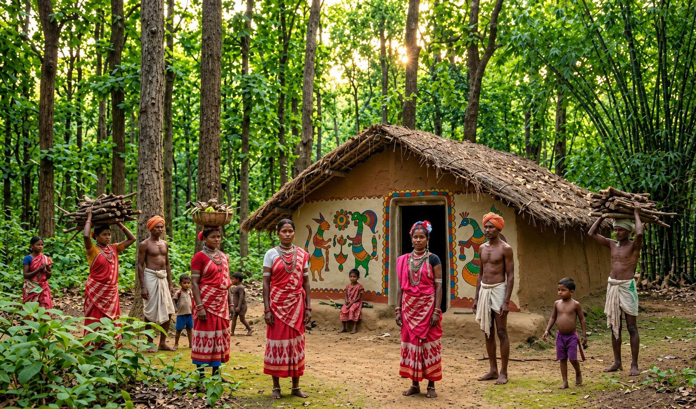
Traditional knowledge and cultural practices connected with forest life.
View Details →